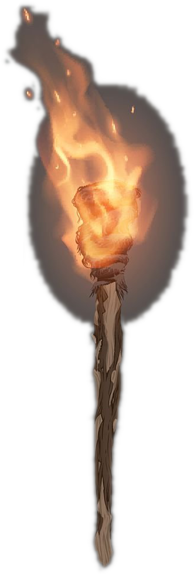

DARKNESS

Torchbearer is a simple app for your Shadowdark torching needs.
Torchbearer does not provide detail on when the torch will burn out. Keep an eye on your torches, and beware of the Grue.
Torchbearer can be run from its github.io page. Torchbearer is open source. Source is available on GitHub.
(c) Paul Murray 2026, License: use at your own risk, no warranty of any kind.
Tap anywhere to dismiss this panel.
This project uses RxJS.
RxJS is Copyright (c) Google, Inc.
Licensed under the Apache License, Version 2.0, January 2004.